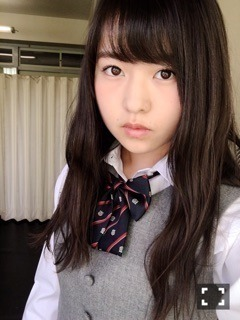
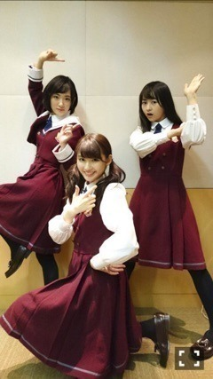
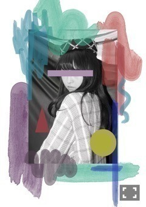

| 2016/04 25 Mon | イコイトイノ。709回目 |

先日永戸鉄也さんの個展
「LAMINATION 積層」に行き、
MdN連載第一回目で取材して以来
お久しぶりに永戸さんにお会いした！
お話をしながら作品を観るという
贅沢な時間を過ごしました。
ひとつひとつ繊細で、
素敵な作品ばかりでした。

保険室ぽい
5月25日 2ndアルバム発売
よろしくお願いお願いします！
収録曲発表！
11〜14thの表題曲、カップリング
14th選抜メンバーで
「きっかけ」
「太陽に口説かれて」
参加してるユニット曲
「環状六号線」
生駒、伊藤、井上
頭文字いユニット。
井上は他の星から
生駒はあらロマあったし、
縁があるふたりです！

奇跡的に3人写ってるのあった！！！！！
少人数ユニットちょっと憧れてました、
まだ振り入れしてないけど、
この3人は活発だからいっぱい動きたい。
ユニット豊富なアルバムになっているので
お楽しみにヽ(ﾟ､｡)ﾉ

最近楽しい収録しました！
ほんと楽しくて有難かったです！
興奮して心がキーっとなっていました！
こないだはじめて猫カフェ行ったけど
常連さんだらけだったよ〜〜
劣等感、疎外感を感じたよ〜
猫可愛かった！
もう一度行きたいけど勇気がいる、、！
次の乃木のの出演します〜
ぜひ聴いてね〜

宇宙支店CAいじったヽ(ﾟ､｡)ﾉ
まりか
コメント(336)
2016/04/25 22:40